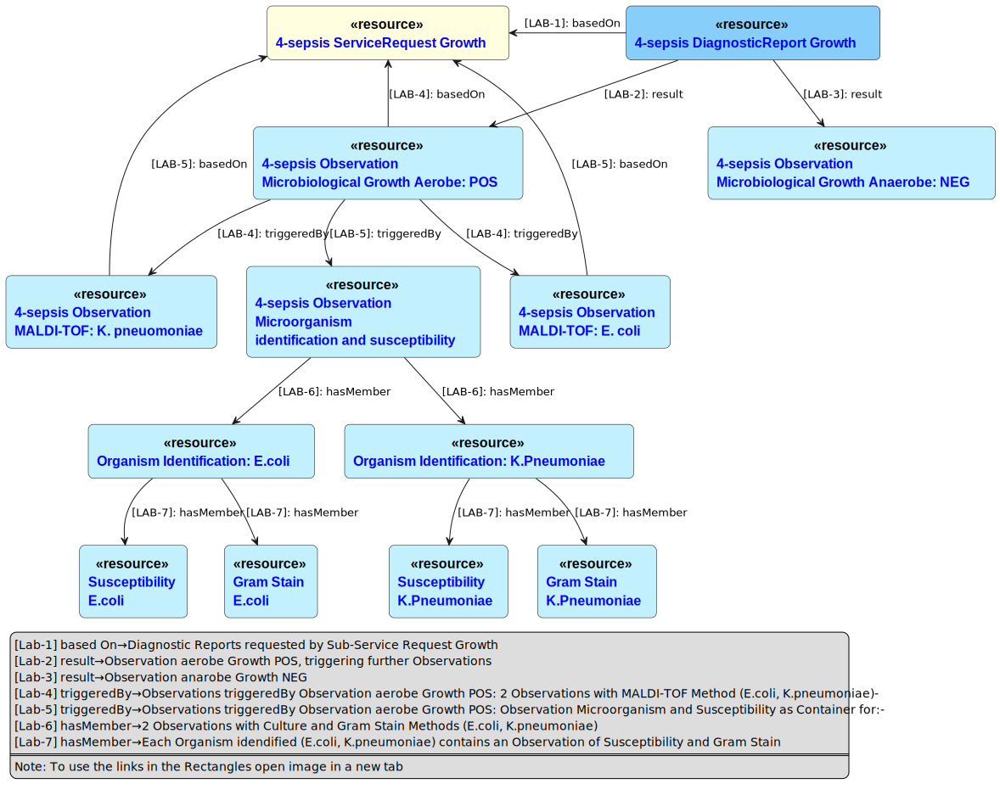

CH LAB-Order (R4)
3.0.0-ballot - ballot

CH LAB-Order (R4)
3.0.0-ballot - ballot

This page is part of the CH LAB-Order (R4) (v3.0.0-ballot: STU 3) based on FHIR (HL7® FHIR® Standard) R4. This is the current published version in its permanent home (it will always be available at this URL). For a full list of available versions, see the Directory of published versions
Mme Birgit Blum a fait une chute malencontreuse en skiant et a subi une fracture multifragmentaire du plateau tibial. Elle a été transférée par hélicoptère au Kantonsspital, un hôpital central, où elle attend son opération. La patiente reçoit quotidiennement Liquemin 5000 E s.c. pour prévenir les événements thromboemboliques. Pour surveiller l'effet de ce traitement, des analyses sanguines régulières sont effectuées pour déterminer l'activité anti-Xa. Un récipient spécial contenant un additif au citrate est utilisé à cet effet. L'échantillon doit être centrifugé et refroidi dans l'heure qui suit. Les maladies cardiaques constituent un élément important de la liste des problèmes de la patiente.
Order Document with Service Request
Le patient Tobias Timmermann se présente chez le Dr Marc Mustermann au cabinet de groupe d'Olten. Il s'identifie oralement par ses données de base comme Tobias Timmermann, né le 01.01.1984. Il signale des douleurs peu claires dans la jambe gauche ainsi que des douleurs respiratoires et une toux simultanées. Le médecin procède à l'anamnèse et à l'examen physique et prescrit les paramètres de laboratoire suivants :
Le médecin effectue lui-même l'hémogramme et la détermination de la CRP au moyen d'un diagnostic au point de service, le diagnostic des D-dimères est prescrit en tant que diagnostic quantitatif dans un laboratoire d'envoi externe. Pour obtenir l'échantillon, un échantillon de sang est prélevé en position allongée (1 tube EDTA, 2 tubes citrate de 5 ml). La commande est transmise au laboratoire externe et l'échantillon est envoyé au laboratoire d'envoi externe par courrier commandé par téléphone. Les résultats des diagnostics internes au point de service (numération sanguine et CRP) sont saisis dans la fiche de laboratoire du patient dans le logiciel du cabinet médical (manuellement ou par le biais d'interfaces électroniques installées localement). Une ordonnance est alors délivrée par le médecin au patient pour l'auto-administration d'un agent anti-thrombotique. Les résultats du laboratoire d'envoi parviennent électroniquement au médecin généraliste le soir même et sont également inscrits sur la fiche de laboratoire du patient. En utilisant le format d'échange actuel, ce processus peut être entièrement automatisé. Après une demande téléphonique du médecin du laboratoire expéditeur en raison d'un résultat D-dimère limite, l'information est donnée qu'une thrombose veineuse profonde ne peut pas être exclue dans cette situation au moyen du D-dimère et le patient est donc rappelé le jour suivant pour une échographie des jambes.
Comme il s'agit probablement d'une thrombose primaire de la veine de la jambe, le Dr Eva Erlenmeier du laboratoire Pipette envoie un retour au Dr Mustermann avec la recommandation d'effectuer un dépistage de la thrombophilie, qui comprend les analyses suivantes : Quick, aPTT, fibrinogène, antithrombine (funct.), temps de thrombine I 2.5 NIH/ml, résistance APC, D-dimères, protéine C, (méthode aPTT), protéine S antigène. Les analyses peuvent être effectuées directement à partir des échantillons des tubes de citrate envoyés.
Order Document with ServiceRequest
Order Document with ServiceRequest and Form
Une mère se rend chez le médecin de famille Peter Presto du cabinet de groupe d'Olten avec son fils Emil Kummer, 6 ans, né le 5 mai 2014, car l'enfant tousse de plus en plus depuis une quinzaine de jours, avec des quintes de toux, et a de la fièvre. La réceptionniste du médecin mesure la fièvre, prélève un échantillon de sang au bout du doigt, détermine la CRP et prépare un frottis sanguin. Le médecin soupçonne une infection virale, mais veut exclure la coqueluche, bien que l'enfant ait été vacciné contre cette maladie. Comme il est pressé par l'urgence, il ne veut pas effectuer lui-même le prélèvement de gorge nécessaire, mais demande à la mère d'accompagner l'enfant au laboratoire le plus proche pour que le prélèvement soit effectué en toute tranquillité. Il prépare un ordre de laboratoire pour effectuer une PCR coqueluche sur le prélèvement de gorge de l'enfant et donne l'ordre à la mère. La mère elle-même n'est pas sûre d'avoir été vaccinée contre la coqueluche. En conséquence, le médecin de famille Peter Presto la vaccine immédiatement contre la coqueluche et recommande de faire de même pour le père et les grands-parents de l'enfant. Entre-temps, l'AMP a examiné au microscope le frottis sanguin de l'enfant et trouve beaucoup de lymphocytes réactifs, ce qui lui semble suspect. Elle n'est pas sûre et interroge le médecin, qui donne l'ordre de remettre les frottis sanguins de l'enfant à la mère et de les faire examiner de plus près au laboratoire. La mère arrive au laboratoire avec son fils, où le médecin ordonne d'abord d'établir l'identité du fils. Ensuite, un prélèvement pharyngé et une ponction cubitale droite sont effectués sur l'enfant dans la salle de prélèvement sanguin du laboratoire et transmis au laboratoire avec les frottis sanguins et l'ordre d'examen du médecin.
Order Document with ServiceRequest
Order Document with ServiceRequest and Form
Le médecin assistant du service de gynécologie du cabinet communautaire d'Olten, le Dr Peter Pap, prépare les consultations du lendemain. Comme le cabinet ne dispose que d'un laboratoire propre minimal, certaines patientes sont envoyées avant le rendez-vous au laboratoire ambulatoire Pipette situé à proximité, dont la jeune patiente Mme Marina Rubella, née le 8. 8. 1992. Dans le logiciel de son cabinet, l'assistante médicale prescrit les analyses standard convenues avec le laboratoire pour l'examen gynécologique triennal de la patiente Rubella. Cela comprend également le prélèvement de sérum sanguin pour d'éventuelles prescriptions ultérieures. Le laboratoire transmet les résultats au cabinet médical au plus tard 90 minutes après la prise de sang. Le Dr Pap prescrit les examens suivants au cours de la consultation:
Order Document with ServiceRequest
Order Document with ServiceRequest and Form
La patiente Sara Speckmann, née le 12. 12. 1975, se trouve à l'hôpital cantonal depuis un certain temps. La nuit dernière, son état général s'est fortement dégradé. Comme il y a suspicion de septicémie, le médecin-chef responsable, le Dr Hans Hauser, ordonne une prise de sang dans la matinée en vue d'une hémoculture. 30 minutes plus tard, une autre hémoculture aérobie et une anaérobie sont prélevées, ainsi qu'un échantillon d'urine. Les cinq échantillons sont ensuite traités dans le laboratoire externe Pipette. Les germes y sont détectés dans des matériaux et identifiés par spectrométrie de masse. Les pathogènes "Klebsiella pneumoniae" et "Escherichia coli" ont été détectés dans les deux flacons d'hémoculture aérobie. Le germe identifié dans l'échantillon d'urine n'est normalement pas pathogène. La croissance bactérienne dans les cultures aérobies conduit à d'autres tests de laboratoire, sans qu'il soit nécessaire de donner une commande spécifique (test reflex). Un antibiogramme est réalisé pour les trois pathogènes détectés dans le sang. Il en ressort que les deux substances actives "amoxicilline+acide clavulanique" et "ceftriaxone" sont efficaces contre les deux germes. Le microbiologiste informe régulièrement le Dr Hans Hauser des différents résultats partiels.
Fig. 1: Task

Le diagramme montre comment le flux de travail des commandes de laboratoire clinique peut être lié à une demande de service (Fig. 1). Il contient une ressource de tâche (Task) qui décrit une activité pouvant être réalisée sur le spécimen, et suit l'état d'achèvement de cette activité. Il s'agit d'une représentation du fait qu'une activité devrait être ou a été initiée, et éventuellement de la réussite ou de l'échec de cette activité.
Fig. 2: Reflexed Observation

Ce diagramme (Fig. 2) montre l'exemple d'un résultat réflexe, c'est-à-dire que le résultat d'un test précédent déclenche d'autres tests sans que des demandes de service explicites soient nécessaires. Dans l'exemple, c'est le résultat de la croissance bactérienne positive qui déclenche d'autres tests, comme la non-identification et la réponse aux antibiotiques.
Order Document with ServiceRequest
Order Document with ServiceRequest and Form
Les entreprises qui travaillent avec des substances dangereuses pour la santé et dans lesquelles les employés sont exposés à des risques particuliers sont soumises à un examen de santé au travail par la SUVA. La surveillance biologique est l'une des possibilités de contrôle. Il permet d'évaluer l'exposition des travailleurs à des agents chimiques en déterminant les agents ou les métabolites dans le matériel biologique (par exemple l'urine). La prévention médicale du travail (AMV) de la SUVA envoie au laboratoire une liste mensuelle contenant les informations suivantes par entreprise (ordre collectif) :
Order Document with ServiceRequest
Order Document with ServiceRequest and Form
Simone Studer, une patiente de 45 ans, s'est présentée à l'Arztpraxis du dermatologue Armin Ahrens pour un contrôle régulier de sa peau, et cette lésion a été notée : Naevus de jonction composé d'une zone séborrhéique à l'extrémité supérieure et d'un réseau atypique constitué de nombreux points, structures, etc. distincts, suggérant une implication mélanocytaire. Excision. Images dermatoscopiques jointes. Spécimen : Ellipse cutanée de 29 x 11 x 5 mm Site corporel :